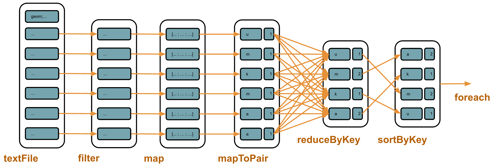
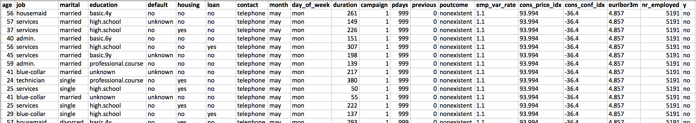

class: center, middle, section # Coding Dojo # Apache Spark & Open Data --- # Agenda - Introduction to Apache Spark - RDDs - Resilient Distributed Datasets - DataFrames - Spark SQL - Machine Learning - Spark cluster --- # Spark - Processing of large volumes of data - Distributed processing (commodity hardware) - Written in Scala, bindings in Java, Python and R --- # History - 2009: AMPLab, Berkeley University - June 2013 : "Top-level project" of the Apache foundation - May 2014: version 1.0.0 - Currently: version 1.5.0 --- # Use cases - Logs analysis - Processing of text files - Analytics - Distributed search (Google, before) - Fraud detection - Product recommendation --- # Proximity with Hadoop - Same use cases - Same development model: MapReduce - Integration with the ecosystem --- # Simpler than Hadoop - API simpler to learn - “Relaxed” MapReduce - Spark Shell: interactive processing --- # Faster than Hadoop Spark officially sets a new record in large-scale sorting (5th November 2014) - Sorting 100 To of data - **Hadoop MR: 72 minutes** - With 2100 nodes (50400 cores) - **Spark: 23 minutes** - With 206 nodes (6592 cores) http://databricks.com/blog/2014/11/05/spark-officially-sets-a-new-record-in-large-scale-sorting.html --- # Spark ecosystem - Spark - Spark Shell - Spark Streaming - Spark SQL - Spark ML/MLlib - GraphX --- # Integration - Yarn, Zookeeper, Mesos - HDFS - Cassandra, Elasticsearch, MongoDB - Notebooks: Zeppelin, Spark Notebook... --- class: center, middle, section # RDDs # Resilient Distributed Datasets --- # RDD - Resilient Distributed Dataset - Abstraction of a collection processed in parallel - Fault tolerant - Can work with tuples: - Key - Value - Tuples must be independent from each other --- # Sources - Files on HDFS - Local files - Collection in memory - Amazon S3 - NoSQL database - ... - Or a custom implementation of `InputFormat` --- # Transformations: - Applies a transformation to an RDD and returns another RDD - Immutable - Lazy! - Examples: - _map()_: transforms a value into another value - _mapToPair()_: transforms a value into a tuple - _filter()_: filters tuples/values - _groupByKey()_: groups values by keys - _reduceByKey()_: aggregates values with an aggregation function - _join()_, _cogroup()_...: joins RDDs --- # Actions: - Final, don't return an RDD - Examples: - _count()_: counts values/tuples - _foreach()_: executes a fonction on each value/tuple (useful for debugging purposes) - _saveAsHadoopFile()_: saves results in Hadoop files - _collect()_: returns results as a list --- # Example - Trees of Paris: CSV file, Open Data - Count of trees by specie ```text geom_x_y;circonfere;adresse;hauteurenm;espece;varieteouc;dateplanta 48.8648454814, 2.3094155344;140.0;COURS ALBERT 1ER;10.0;Aesculus hippocastanum;; 48.8782668139, 2.29806967519;100.0;PLACE DES TERNES;15.0;Tilia platyphyllos;; 48.889306184, 2.30400164126;38.0;BOULEVARD MALESHERBES;0.0;Platanus x hispanica;; 48.8599934405, 2.29504883623;65.0;QUAI BRANLY;10.0;Paulownia tomentosa;;1996-02-29 ... ``` --- # Example ```java JavaSparkContext sc = new JavaSparkContext("local", "arbres"); sc.textFile("data/arbresalignementparis2010.csv") .filter(line -> !line.startsWith("geom")) .map(line -> line.split(";")) .mapToPair(fields -> new Tuple2<String, Integer>(fields[4], 1)) .reduceByKey((x, y) -> x + y) .sortByKey() .foreach(t -> System.out.println(t._1 + " : " + t._2)); ```  --- class: center, middle, lab # Lab - Data exploration --- # The data set - List of potential clients along with: - some demographics - other characteristics - whether they subscribed a bank product - CSV file: `src/main/resources/banking-full.csv`  --- # 1 - Compute the average age - Class `fr.ippon.dojo.spark.exploration.rdd.AverageAge` - Steps - load the CSV file - skip the header line - split the lines by the ";" char - extract the age and convert the string to int - sum and count the ages, and divide one by the other - print the result --- # 2 - List distinct jobs - Class `fr.ippon.dojo.spark.exploration.rdd.ListDistinctJobs` - Steps - load the CSV file - skip the header line - extract the job column - put the jobs in a tuple with a dummy value - use a reduce-by-key operation to remove duplicates - print the results --- # 3 - Count by job - Class `fr.ippon.dojo.spark.exploration.rdd.CountByJob` - Steps - load the CSV file - skip the header line - extract the job column - put the jobs in a tuple with the value 1 - use a reduce-by-key operation to sum values corresponding to the same keys - print the results --- # 4 - Average age by marital status - Class `fr.ippon.dojo.spark.exploration.rdd.AverageAgeByMaritalStatus` - Steps - load the CSV file - skip the header line - extract the marital status column - put the marital statuses in a tuple with, as value, a tuple with the age and a counter initialized at 1 - use a reduce-by-key operation to sum and count the ages corresponding to the same keys - print the results --- class: center, middle, section # DataFrames --- class: center, middle, section # Machine Learning --- # Machine Learning Learn from existing data → model Apply the model on new data Categories: - Supervised learning - Unsupervised learning - Recommendation --- # Supervised learning Training data = Features + Label Predict the label on new data **Classification:** label = class - E.g. classifiy mails: spam / non-spam **Regression:** label = continuous variable - E.g. price for a second hand car --- # Unsupervised learning Training data = Features Build clusters of points based on similarities **Clustering:** classify into clusters - E.g. find groups of similar people --- # Workflow 1. Data Cleansing 1. Feature Engineering 1. Train a Machine Learning model 1. Split the dataset: training/validation/test datasets 1. Train the model 1. Apply the model on new data --- # Data Cleansing - Convert strings to numbers / booleans / ... - Parse dates - Handle missing values - Handle data in an incorrect format - ... --- # Feature Engineering - Transform data into numerical features - E.g.: - A birth date → age - Dates of phone calls → Number of calls - Text → Vector of words - 2 names → Levenshtein distance <img src="img/features_engineering.png" width="700"> --- # Machine Learning <img src="img/ml_model.png" width="250" style="float:right"> - Train a model - Test an algorithm with different params - Cross validation (Grid Search) - Compare different algorithms, e.g.: - Logistic regression - Gradient boosting trees - Random forest --- # Machine Learning - Evaluate the performance of the model - E.g.: ROC curve - Examine predictions - False positives, false negatives... <img src="img/roc_curve.png" width="250"> <img src="img/predictions.png" width="250"> --- # Spark ML / MLlib's API - **Spark MLlib**: low-level API - Data types: `Vector`, `LabeledPoint`... - Algorithms: `LinearRegressionWithSGD`, `DecisionTree`... - **Spark ML**: higher-level (pipeline...) - Transformer: `DataFrame` → `DataFrame` - Estimator: `DataFrame` → `Model` --- # How to use the API 1. Load data into a DataFrame 1. Do some feature engineering - Specific conversions - Index categorical features: `StringIndexer` - Assemble vectors: `VectorAssembler` 1. Split the data set into training & test data sets - `df.randomSplit(Array(0.80, 0.20))` 1. Instantiate the algorithm & define params 1. Call the `fit()` method to get a model 1. Call the `transform()` method to make predictions --- class: center, middle, lab # Lab 1.1 - Linear Regression --- # Linear Regression - Model the relationship between a **continuous** variable and explanoratory variables <img src="img/linear_regression_equation.png" width="300"> <img src="img/linear_regression.png" width="400"> --- # Use case Predict the age from other characteristics <img src="img/data_bank.png" width="100%"> --- # Lab - `RegressionMain` Feature Engineering - fill NAs - standardize each feature - assemble a vector of features Split the data set: - training data set: 80% - test data set: 20% Train the algorithm - Spark MLlib: `LinearRegression` - Test the model --- class: center, middle, lab # Lab 1.2 - Gradient Boosted Tree Regression ## (Optional) --- # Gradient Boosted Tree Regression - Ensemble of weak prediction models - Optimization of a differentiable loss function Compare with Linear Regression: - Spark MLlib: `GBTRegressor` - Test different values for the `maxDepth` and `stepSize` parameters --- class: center, middle, lab # Lab 1.3 - Grid Search & Cross Validation ## (Optional) --- # Grid Search - Test each combination of parameters (grid) - Return the best-performing model using an evaluator - Spark MLlib: `ParamGridBuilder` --- # Evaluation of the error - Root Mean Square error <img src="img/rmse.png" width="60%"> - Spark MLlib: `RegressionEvaluator` --- # Cross Validation - k-fold validation <img src="img/cross_validation.png" width="80%"> - Spark MLlib: `CrossValidator` --- class: center, middle, lab # Lab 2.1 - Classification ## Logistic Regression --- # Logistic Regression - Model the relationship between a **binary** variable and explanoratory variables --- # Use case Predict whether the person will purchase a subscription ("y") from other characteristics <img src="img/data_bank.png" width="100%"> --- # Spark ML Pipelines - Pipeline = Transformers + Estimator - Call `pipeline.fit()` to train a model <img src="img/pipeline_fit.png" width="65%"> - Call `model.transform()` to apply the model <img src="img/pipeline_transform.png" width="65%"> --- # Lab - `ClassificationMain` Feature Engineering - index the "y" column into a "label" column - index other features - assemble a vector of features Split the data set: - training data set: 80% - test data set: 20% Train the algorithm - Spark MLlib: `LogisticRegression` - Test the model --- class: center, middle, lab # Lab 2.2 - Grid Search & Cross Validation ## (Optional) --- # Grid Search *See Lab 1.3* --- # Evaluation of the error - Binary evaluator - Spark MLlib: `BinaryClassificationEvaluator` --- # Cross Validation *See Lab 1.3* - Spark MLlib: `CrossValidator` --- class: center, middle, lab # Lab 2.3 - Random Forests --- # Random Forests - Decision tree: fixed set of decisions to make a choice - Random forests: - Many decision trees - Each tree uses a random selection of features - Final decision = average of all the decisions - Spark MLlib: `RandomForestClassifier`